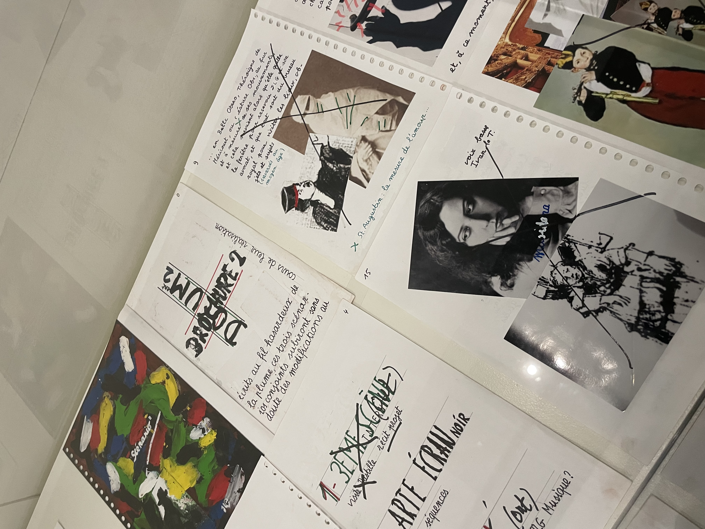
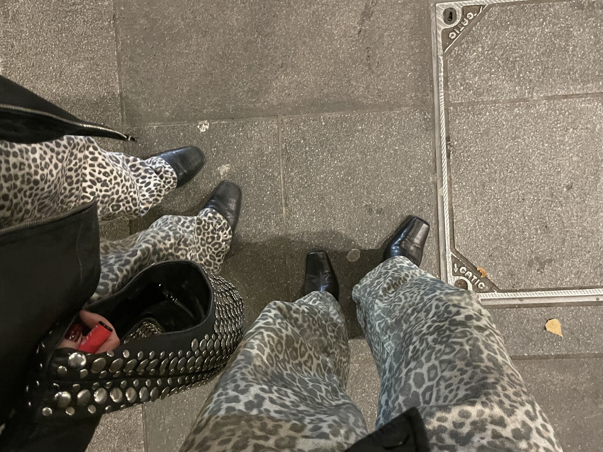
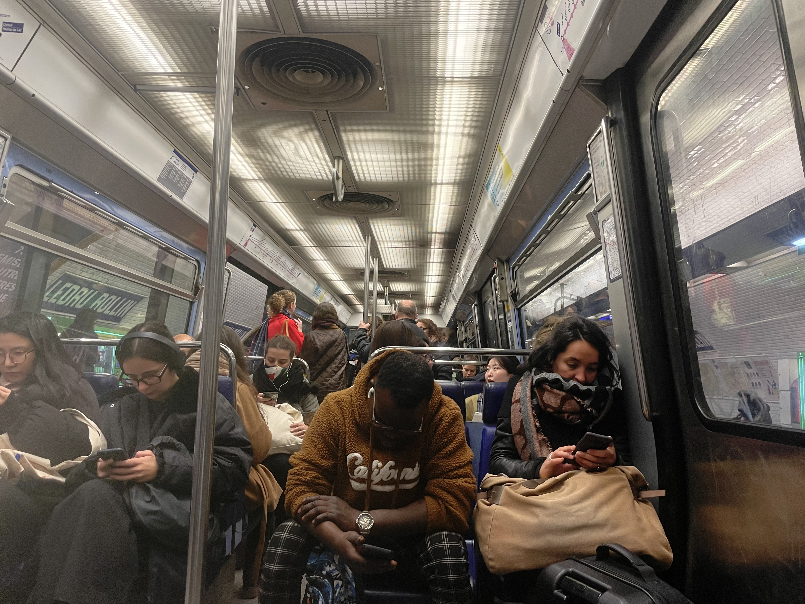
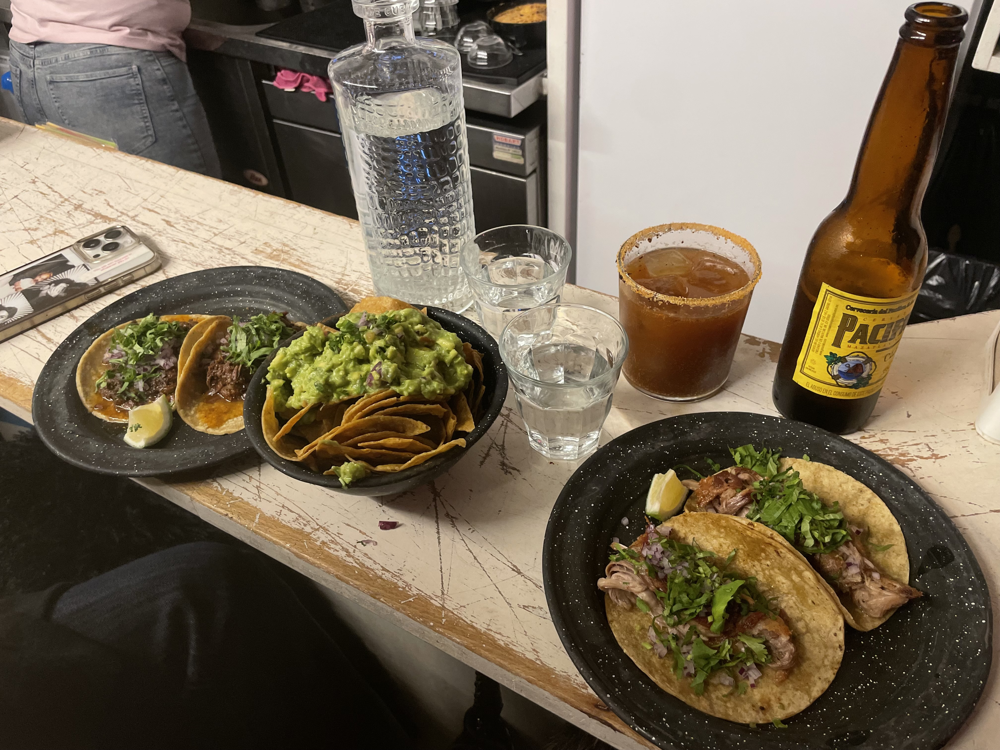
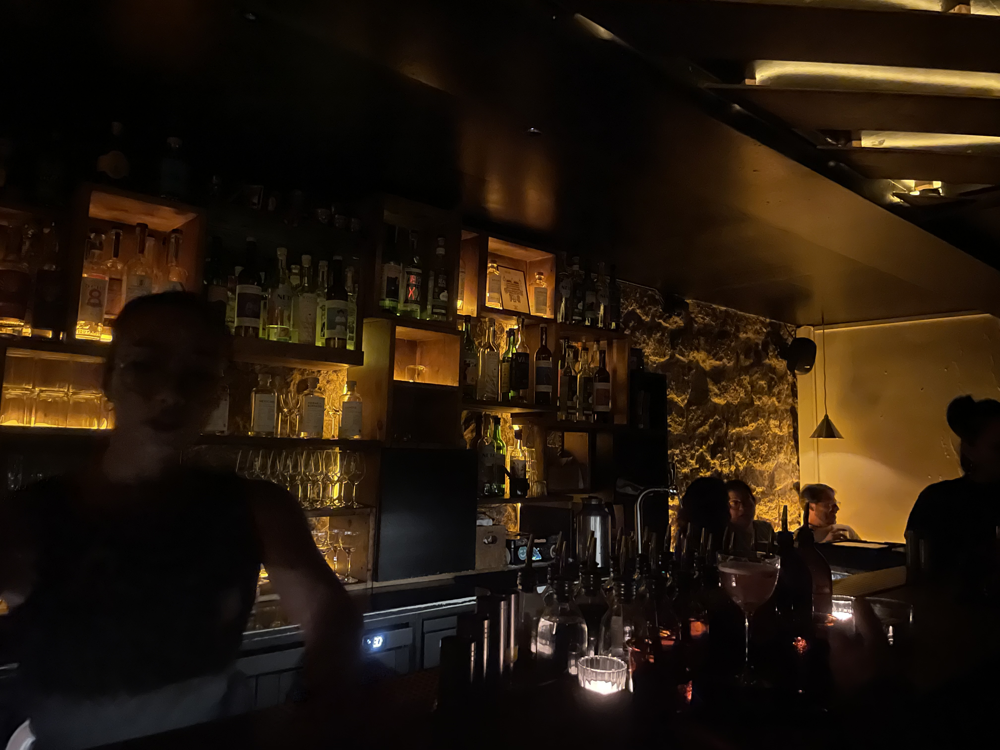
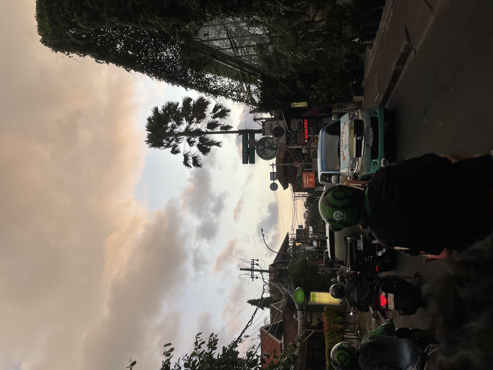
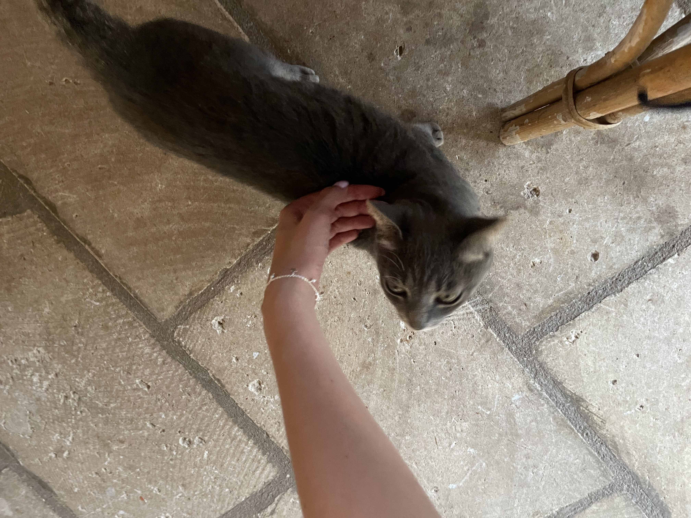

BSc Creative Computing Projects
AI, Ethics & Critical Media
- Art & AI
A comic and critical reflection exploring surveillance, data, and emotion in an AI-driven society.
- Predictive Policing: COMPAS Critique
An essay exploring algorithmic bias in predictive policing systems, focusing on the COMPAS tool.
 Essay on Assemblage Theory
Essay on Assemblage Theory
A critical theory essay applying assemblage thinking to networks, systems, and digital culture.
Creative Data, Visualisation & Storytelling
- Energy Visualisation Project
A data visualisation comparing global energy consumption and GDP across nations.
 Big Data & Poetic Sentiment Analysis
Big Data & Poetic Sentiment Analysis
A research project transforming quantitative sentiment data into poetic visual storytelling.
- Music App Project
Designing an interactive mobile app to support the creative community through shared sound spaces (Incomplete).
Human-Centered Tech & Accessibility
- Smart Cane for Visually Impaired
A user-centered design proposal for a smart cane with vibration feedback and object detection.
- Energy & Physical Computing Presentation
Final presentation summarising outcomes from the physical computing module, including sensor integration.
Machine Intelligence & Model Building
- Machine Intelligence Notebook 1
Jupyter Notebook exploring classification models and neural network training in TensorFlow.
- Machine Intelligence Notebook 2
Extension of the first notebook with image classification and training optimisation techniques.
 Image Classifier README
Image Classifier README
A breakdown of model training, preprocessing, and deployment pipeline for your image classifier.